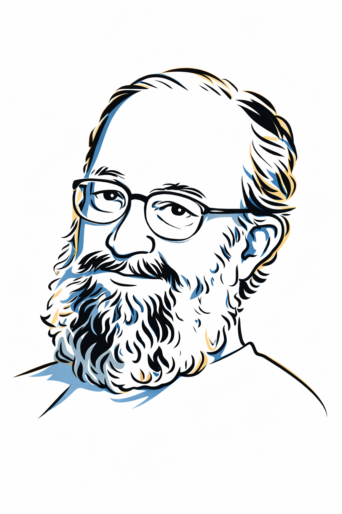
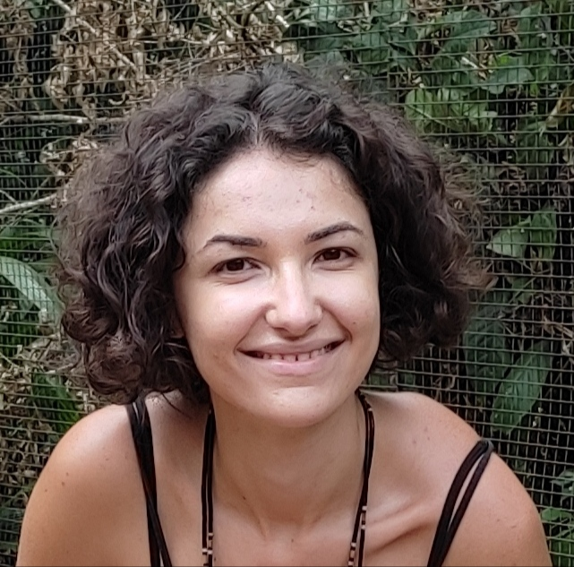

The deadline for nominating candidates for the Wagner Sessin Awards is 31 July 2026. Candidates must be up to 35 years old.
The Awards are for young researchers who have demonstrated a strong dedication to scientific or technological research and potential for leadership and have made notable contributions in one of the two selected areas: Orbital Mechanics and Control and Dynamical and Planetary Astronomy.
The scientific-technological contributions are characterized by articles published in indexed scientific journals, full articles published in arbitrated proceedings with strict selection criteria, theses defended, and notable technological contributions resulting from activities carried out mainly in Brazil.
The Awards will be presented at the opening session of CBDO 2026.
Please find detailed information at http://www.astro.iag.usp.br/~dinamica/premiows.htm
2026 Wagner Sessin Award Recipients

Yeva Gevorgyan de Mendonça
Dynamical and Planetary Astronomy
Yeva Gevorgyan de Mendonça holds a PhD in Applied Mathematics from the University of São Paulo (USP), with research in celestial mechanics and planetary geophysics. She is currently a postdoctoral researcher at King Abdullah University of Science and Technology (KAUST), working on numerical methods for nonlinear partial differential equations. Her research interests include planetary geophysics, rational mechanics, and numerical analysis.
Gabriel Antonio Caritá
Orbital Mechanics and Control
Gabriel Antonio Caritá holds a PhD in Space Engineering and Technology from the National Institute for Space Research (INPE) and is currently a postdoctoral researcher at UNESP in Rio Claro. His research focuses on celestial mechanics and orbital dynamics applied to astrodynamics and astronomy, including retrograde orbits, orbital transfers, and machine learning.
Past Recipients of the Wagner Sessin Awards (2000–2024)
| Recipient | Area | Year |
|---|---|---|
| Gustavo Madeira | Dynamical and Planetary Astronomy | 2024 |
| Rodolfo Batista Negri | Orbital Mechanics and Control | 2024 |
| Alessandra Ferraz da Silva Ferreira | Orbital Mechanics and Control | 2022 |
| André Izidoro Ferreira da Costa | Dynamical and Planetary Astronomy | 2020 |
| Jhonathan Orlando Murcia Piñeros | Orbital Mechanics and Control | 2020 |
| Rogerio Deienno | Dynamical and Planetary Astronomy | 2018 |
| Luiz Artur Gagg Filho | Orbital Mechanics and Control | 2018 |
| Felipe Braga Ribas | Dynamical and Planetary Astronomy | 2016 |
| Diogo Merquizo Sanchez | Orbital Mechanics and Control | 2016 |
| Adrián Rodríguez Colucci | Dynamical and Planetary Astronomy | 2014 |
| Marcos Tadeu dos Santos | Dynamical and Planetary Astronomy | 2012 |
| Priscilla Andressa de Sousa Silva | Orbital Mechanics and Control | 2012 |
| Nelson Callegari Jr. | Dynamical and Planetary Astronomy | 2008 |
| Walkiria Schulz | Orbital Mechanics and Control | 2006 |
| Ernesto Vieira Neto | Orbital Mechanics and Control | 2004 |
| Thais Mothé Diniz | Dynamical and Planetary Astronomy | 2004 |
| Jorge Márcio Ferreira Carvano | Dynamical and Planetary Astronomy | 2004 |
| Fernando Virgilio Roig | Dynamical and Planetary Astronomy | 2002 |
| David Nesvorný | Dynamical and Planetary Astronomy | 2000 |
| Sandro da Silva Fernandes | Orbital Mechanics and Control | 2000 |
| Antonio Fernando Bertachini de Almeida Prado | Orbital Mechanics and Control | 2000 |
Evaluation Committee
The evaluation will be carried out by the Wagner Sessin Awards Committee, named below, and by ad hoc members invited by the Committee.
- Sylvio Ferraz Mello (IAG-USP)
- Rodolpho Vilhena de Moraes (ICT-UNIFESP)
- Daniela Lazzaro (Observatório Nacional)
- Antonio Fernando Bertachini de Almeida Prado (INPE)
- Othon Cabo Winter (FEG-UNESP)